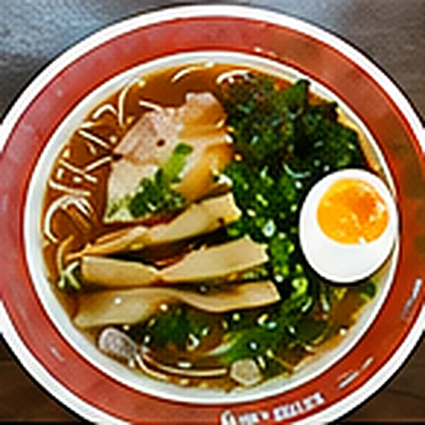
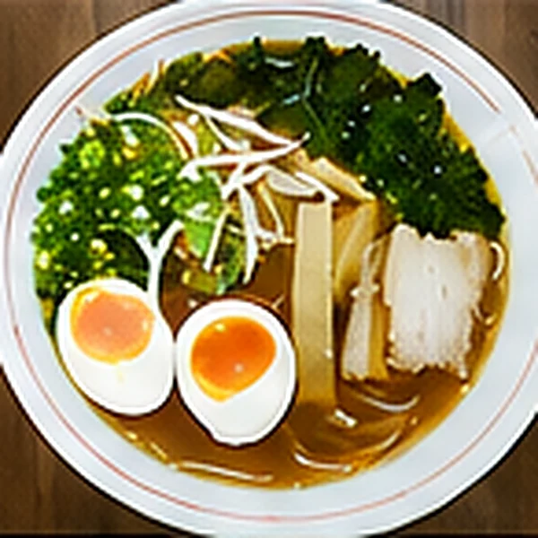
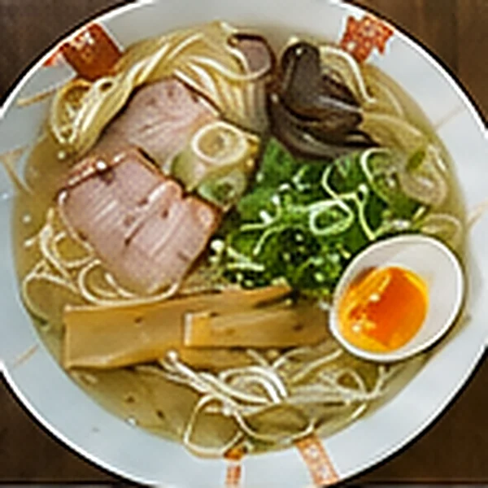
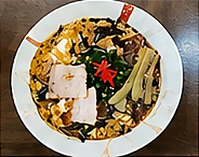
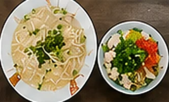
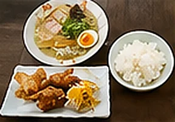
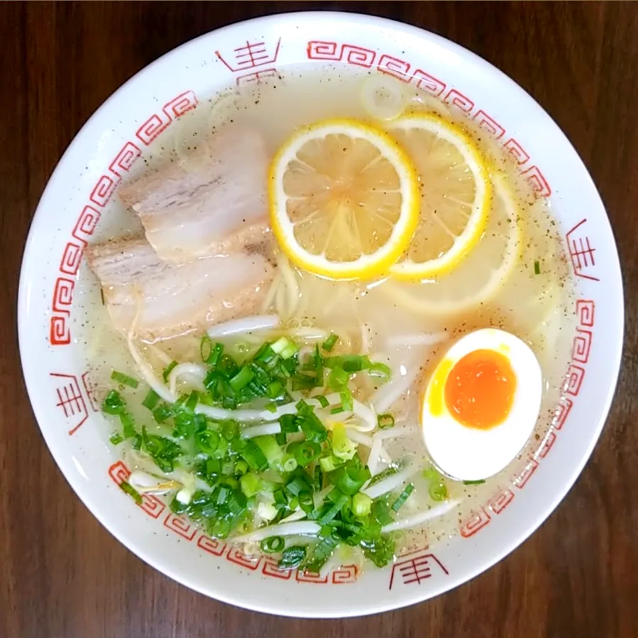
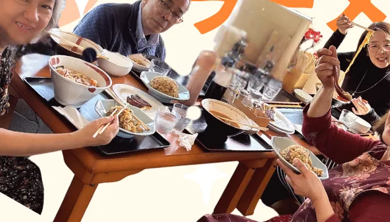

山寶しょうゆラーメン
東京で修業して持ち帰った、すっきり醤油の一杯。お店の看板です。

東京風ラーメンと、お好み焼きの店。
宮崎のインフルエンサー「りょーやん」さん・「のべしる」さんに紹介されました
動画にひみつのお得情報あり →東京で修業して持ち帰った、すっきり醤油の一杯。お店の看板です。

あとを引くほどよい辛さ。味玉ふたつ、わかめともやしもたっぷり。

まろやかなとんこつに、厚切りチャーシューとキクラゲ。九州の方にも。
お昼の部（毎日）
11:00〜14:00
夜の部（水・木・金・土）
18:00〜20:00（L.O.）
月・火・日曜は夜の部お休みです
MENU
ラーメンは650円から。セット、おつまみ、お酒もそろっています。
お持ち帰りできます！
 山寶ラーメン ピリ辛
山寶ラーメン ピリ辛
山寶ラーメン こんにゃくピリ辛 みそラーメン
みそラーメン みそやさいラーメン
みそやさいラーメン やさいラーメン
やさいラーメン レモンラーメンさっぱり
レモンラーメンさっぱり
夜の部（水〜土）限定・お持ち帰りできます
 ラーメン＆半チャーハンセット人気
ラーメン＆半チャーハンセット人気 ラーメン＆餃子セット（6個）
ラーメン＆餃子セット（6個） 山寶ラーメン＆チャーシュー丼セット
山寶ラーメン＆チャーシュー丼セット
ラーメン＆チャーシュー丼セット（大） ラーメン＆チャーシュー丼セット
ラーメン＆チャーシュー丼セット とんこつラーメン＆唐揚げセット（5個）
とんこつラーメン＆唐揚げセット（5個）
とんこつラーメン＆唐揚げセット（4個） 餃子（7個）
餃子（7個） ライス
ライス
はじまりは延岡駅前のお好み焼き屋さん。だから山寶では、ラーメンと鉄板のお好み焼きを、いっしょに楽しめます。お好み焼きは夜の部（水〜土）限定です。

STORY

店主はフィリピン出身。子どもたちがまだ小さいころに夫に先立たれ、日本にぽつんと残されました。孤独と忙しさに追われながら、6人の子どもをひとりで育て上げてきました。
それでも明るさは消えませんでした。歌って、踊って、おいしいものを食べ歩く。日本に来て約40年、日本語はいまもカタコトまじり。でもその笑顔に会いに、今日もお客さんがやってきます。
ガッツリさんも、子連れのママも、
車椅子の方も、学生さんも。だれでも来てね。
お店の雰囲気は、動画がいちばん伝わります。
ひみつのミッション
宮崎のTikToker・りょーやんさんが、2本の動画で山寶を紹介してくれました。動画のどこかにひみつのお得情報がかくれています。見つけたら、注文のときにお店でこっそり教えてね。
見つけた人だけの、お楽しみです。
黄色い看板をくぐると、にぎやかなテーブルが待っています。



GUIDE
はじめてでも、家族連れでも、海外の方でも。安心して来られるお店です。
車椅子やベビーカーでも入りやすい入口です。
家族の食事や、仲間との集まりにも。
お店の前に停められます。
ジュースやアイスのサービスがあります。
日本語・English・Tagalog で注文できます。
おうちでも、山寶の味を楽しめます。
はい、お店の前に5〜8台ほど停められます。
大歓迎です。個室もあり、お子さまにはジュースやアイスのサービスもあります。
入口はスロープになっているので、車椅子やベビーカーでも入りやすいです。
Yes! English and Tagalog are OK. 英語・タガログ語で対応できます。
お好み焼きは、夜の部（水・木・金・土 18:00〜）限定のメニューです。
お好み焼き・鉄板料理、セットメニュー、餃子・唐揚げ・枝豆などのおつまみもあります。ハイボールやレモンサワー、焼酎などお酒もそろっています。
はい、お持ち帰りできます。おみやげラーメンもあるので、お店でお声がけください。
ACCESS
延岡市昭和町。黄色い看板と、赤い「ラーメン」ののぼりが目印です。
この看板が見えたら到着です。